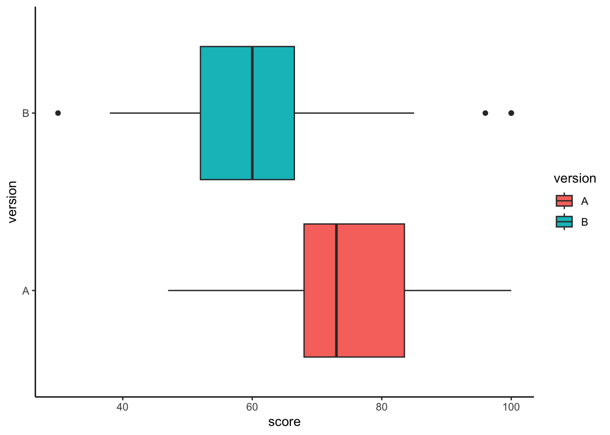

16 Comparing Two Population Means
This book serves as a main reference book for my MATH 4720 Statistical Methods and MATH 4740 Biostatistical Methods at Marquette University. Some topics can also be discussed in an introductory data science course. You’ll learn basic probability and statistical concepts as well as data analysis techniques such as linear regression using R computing software.
16.1 Introduction
Why Compare Two Populations?
- Often we are faced with a comparison of parameters from different populations.
- Comparing the mean annual income for Male and Female groups.
- Testing if a diet used for losing weight is effective from Placebo samples and New Diet samples.
- If these two samples are drawn from populations with means, \(\mu_1\) and \(\mu_2\) respectively, the testing problem can be formulated as \[\begin{align}
&H_0: \mu_1 = \mu_2 \\ &H_1: \mu_1 > \mu_2
\end{align}\]
- \(\mu_1\): male mean annual income; \(\mu_2\): female mean annual income
- \(\mu_1\): mean weight loss from the New Diet group; \(\mu_2\): mean weight loss from the Placebo group
Dependent and Independent Samples
- The two samples collected can be independent or dependent.
- Two samples are dependent or matched pairs if the sample values are matched, where the matching is based on some inherent relationship.
- Height data of fathers and daughters, where the height of each dad is matched with the height of his daughter.
- Weights of subjects measure before and after some diet treatment, where the subjects are the same both before and after measurements.

Dependent Samples (Matched Pairs)
- Subject 1 may refer to
- the same person with two measurements (before and after)
- the first matched pair (dad-daughter)
| Subject | (Dad) Before | (Daughter) After |
|---|---|---|
| 1 | \(x_{b1}\) | \(x_{a1}\) |
| 2 | \(x_{b2}\) | \(x_{a2}\) |
| 3 | \(x_{b3}\) | \(x_{a3}\) |
| \(\vdots\) | \(\vdots\) | \(\vdots\) |
| \(n\) | \(x_{bn}\) | \(x_{an}\) |

Independent Samples
- Two samples are independent if the sample values from one population are not related to the sample values from the other.
- Salary samples of men and women, where the two samples are drawn independently from the male and female groups.

- Subject 1 of the Group 1 has nothing to do with the Subject 1 of the Group 2.
| Subject of Group 1 (Male) | Measurement of Group 1 | Subject of Group 2 (Female) | Measurement of Group 2 |
|---|---|---|---|
| 1 | \(x_{11}\) | 1 | \(x_{21}\) |
| 2 | \(x_{12}\) | 2 | \(x_{22}\) |
| 3 | \(x_{13}\) | 3 | \(x_{23}\) |
| \(\vdots\) | \(\vdots\) | \(\vdots\) | \(\vdots\) |
| \(n_1\) | \(x_{1n_1}\) | \(\vdots\) | \(\vdots\) |
| \(n_2\) | \(x_{2n_2}\) |
Inference from Two Samples
- The statistical methods are different for these two types of samples.
- The good news is the concepts of confidence intervals and hypothesis testing for one population can be applied to two-population cases.
- \(\text{CI = point estimate} \pm \text{margin of error (E)}\)
- e.g., \(\overline{x} \pm t_{\alpha/2, n-1} \frac{s}{\sqrt{n}}\)
- Margin of error = critical value \(\times\) standard error of the point estimator
- The 6 testing steps are the same, and both critical value and \(p\)-value method can be applied too
- e.g., \(t_{test} = \frac{\overline{x} - \mu_0}{s/\sqrt{n}}\)
16.2 Inferences About Two Means: Dependent Samples (Matched Pairs)
Hypothesis Testing for Dependent Samples
| Subject | \(x_1\) | \(x_2\) | Difference \(d = x_1 - x_2\) |
|---|---|---|---|
| 1 | \(x_{11}\) | \(x_{21}\) | \(\color{red}{d_1}\) |
| 2 | \(x_{12}\) | \(x_{22}\) | \(\color{red}{d_2}\) |
| 3 | \(x_{13}\) | \(x_{23}\) | \(\color{red}{d_3}\) |
| \(\vdots\) | \(\vdots\) | \(\vdots\) | \(\color{red}{\vdots}\) |
| \(n\) | \(x_{1n}\) | \(x_{2n}\) | \(\color{red}{d_n}\) |
\(\mu_d = \mu_1 - \mu_2\)
\(\begin{align} & H_0: \mu_1 - \mu_2 = 0 \iff \mu_d = 0 \\ & H_1: \mu_1 - \mu_2 > 0 \iff \mu_d > 0 \\ & H_1: \mu_1 - \mu_2 < 0 \iff \mu_d < 0 \\ & H_1: \mu_1 - \mu_2 \ne 0 \iff \mu_d \ne 0 \end{align}\)
Inference for Paired Data
- Requirements: the sample differences \(\color{blue}{d_i}\)s are
- from a random sample
- from a normal distribution and/or \(n > 30\)
- This can be confirmed using the QQ-plot of \(d_i\)s.
- Follow the same procedure as the one-sample \(t\)-test!
- The test statistic is \(\color{blue}{t_{test} = \frac{\overline{d}-0}{s_d/\sqrt{n}}} \sim T_{n-1}\) under \(H_0\) where \(\overline{d}\) and \(s_d\) are the mean and SD of the difference samples \((d_1, d_2, \dots, d_n)\).
- The critical value is either \(t_{\alpha, n-1}\) and \(t_{\alpha/2, n-1}\) depending on if it is a one-tailed or two-tailed test.
- Below is a table that summarizes information necessary to make inferences about paired data.
| Paired \(t\)-test | Test Statistic | Confidence Interval for \(\mu_d = \mu_1 - \mu_2\) |
|---|---|---|
| \(\sigma_d\) is unknown | \(\large t_{test} = \frac{\overline{d}}{s_d/\sqrt{n}}\) | \(\large \overline{d} \pm t_{\alpha/2, n-1} \frac{s_d}{\sqrt{n}}\) |
- The test for matched pairs is called a paired \(t\)-test.
Example
- Consider a capsule used to reduce blood pressure (BP) for individuals with hypertension.
- A sample of 10 individuals with hypertension takes the medicine for 4 weeks.
- Does the data provide sufficient evidence that the treatment is effective in reducing BP?
| Subject | Before \((x_b)\) | After \((x_a)\) | Difference \(d = x_b - x_a\) |
|---|---|---|---|
| 1 | 143 | 124 | 19 |
| 2 | 153 | 129 | 24 |
| 3 | 142 | 131 | 11 |
| 4 | 139 | 145 | -6 |
| 5 | 172 | 152 | 20 |
| 6 | 176 | 150 | 26 |
| 7 | 155 | 125 | 30 |
| 8 | 149 | 142 | 7 |
| 9 | 140 | 145 | -5 |
| 10 | 169 | 160 | 9 |
- \(\overline{d} = 13.5\), \(s_d= 12.48\).
- \(\mu_1 =\) Mean Before, \(\mu_2 =\) Mean After, and \(\mu_d = \mu_1 - \mu_2\).
Step 1
- \(\begin{align} &H_0: \mu_1 = \mu_2 \iff \mu_d = 0\\ &H_1: \mu_1 > \mu_2 \iff \mu_d > 0 \end{align}\)
Step 2
- \(\alpha = 0.05\)
Step 3
- \(t_{test} = \frac{\overline{d}}{s_d/\sqrt{n}} = \frac{13.5}{12.48/\sqrt{10}} = 3.42\)
Step 4-c
- \(t_{\alpha, n-1} = t_{0.05, 9} = 1.833\).
Step 5-c
- We reject \(H_0\) if \(\small t_{test} > t_{\alpha, n-1}\). Since \(\small t_{test} = 3.42 > 1.833 = t_{\alpha, n-1}\), we reject \(H_0\).
Step 6
- There is sufficient evidence to support the claim that the drug is effective in reducing blood pressure.

- The 95% CI for \(\mu_d = \mu_1 - \mu_2\) is \[\begin{align}\overline{d} \pm t_{\alpha/2, df} \frac{s_d}{\sqrt{n}} &= 13.5 \pm t_{0.025, 9}\frac{12.48}{\sqrt{10}}\\ &= 13.5 \pm 8.927 \\ &= (4.573, 22.427).\end{align}\]
- We are 95% confident that the mean difference in blood pressure is between 4.57 and 22.43.
- Since the interval does NOT include 0, it leads to the same conclusion as rejection of \(H_0\).
Two-Sample Paired T-Test in R
- Below is the same data as in the previous hypertension example.
- These figures illustrate how to perform the hypothesis testing for paired data in R.
pair_data before after
1 143 124
2 153 129
3 142 131
4 139 145
5 172 152
6 176 150
7 155 125
8 149 142
9 140 145
10 169 160(d <- pair_data$before - pair_data$after) [1] 19 24 11 -6 20 26 30 7 -5 9(d_bar <- mean(d))[1] 13.5(s_d <- sd(d))[1] 12.48332## t_test
(t_test <- d_bar/(s_d/sqrt(length(d))))[1] 3.419823## t_cv
qt(p = 0.95, df = length(d) - 1)[1] 1.833113## p_value
pt(q = t_test, df = length(d) - 1,
lower.tail = FALSE)[1] 0.003815036- Below is an example of how to calculate the confidence interval for the change in blood pressure.
d_bar + c(-1, 1) * qt(p = 0.975, df = length(d) - 1) * (s_d / sqrt(length(d))) ## CI[1] 4.569969 22.430031We can see that performing these calculations in R leads us to the same conclusions we previously made.
There is also a t-test function in R.
## t.test() function
t.test(x = pair_data$before, y = pair_data$after,
alternative = "greater", mu = 0, paired = TRUE)
Paired t-test
data: pair_data$before and pair_data$after
t = 3.4198, df = 9, p-value = 0.003815
alternative hypothesis: true mean difference is greater than 0
95 percent confidence interval:
6.263653 Inf
sample estimates:
mean difference
13.5 - Be careful about the one-sided CI listed in the table above! We should use the two-sided CI!
16.3 Inference About Two Means: Independent Samples
Compare Population Means: Independent Samples
- Examples of independent data:
- Whether stem cells can improve heart function.
- The relationship between pregnant women’s smoking habits and newborns’ weights.
- Whether one variation of an exam is harder than another variation.


Testing for Independent Samples \((\sigma_1 \ne \sigma_2)\)
- Requirements:
- The two samples are independent.
- Both samples are random samples.
- \(n_1 > 30\), \(n_2 > 30\) and/or both samples are from a normally distributed population.
- We are interested in whether the two population means, \(\mu_1\) and \(\mu_2\), are equal or if one is larger than the other.
- \(H_0: \mu_1 = \mu_2\)
- This is equivalent to testing if their difference is zero.
- \(H_0: \mu_1 - \mu_2 = 0\)
Sampling Distribution of \(\overline{X}_1 - \overline{X}_2\)
If the two samples are from independent normally distributed populations or \(n_1 > 30\) and \(n_2 > 30\), \[\small \overline{X}_1 \sim N\left(\mu_1, \frac{\sigma_1^2}{n_1} \right), \quad \overline{X}_2 \sim N\left(\mu_2, \frac{\sigma_2^2}{n_2} \right)\]
\(\overline{X}_1 - \overline{X}_2\) has the sampling distribution \[\small \overline{X}_1 - \overline{X}_2 \sim N\left(\mu_1 - \mu_2, \frac{\sigma_1^2}{n_1} \color{red}{+} \color{black}{\frac{\sigma_2^2}{n_2}} \right) \]
\[\small Z = \frac{(\overline{X}_1 - \overline{X}_2) - (\mu_1 - \mu_2)}{\sqrt{\frac{\sigma_1^2}{n_1} + \frac{\sigma_2^2}{n_2}}} \sim N(0, 1)\]
Test Statistic for Independent Samples \((\sigma_1 \ne \sigma_2)\)
- With \(D_0\) being a hypothesized value (often 0), our testing problem is
\(\small \begin{align} &H_0: \mu_1 - \mu_2 \le D_0\\ &H_1: \mu_1 - \mu_2 > D_0 \end{align}\) (right-tailed)
\(\small \begin{align} &H_0: \mu_1 - \mu_2 \ge D_0\\ &H_1: \mu_1 - \mu_2 < D_0 \end{align}\) (left-tailed)
\(\small \begin{align} &H_0: \mu_1 - \mu_2 = D_0\\ &H_1: \mu_1 - \mu_2 \ne D_0 \end{align}\) (two-tailed)
- If \(\sigma_1\) and \(\sigma_2\) are known, the test statistic is the z-score of \(\small \overline{X}_1 - \overline{X}_2\) under \(H_0\): \[z_{test} = \frac{(\overline{x}_1 - \overline{x}_2) - (\mu_1 - \mu_2)}{\sqrt{\frac{\sigma_1^2}{n_1} + \frac{\sigma_2^2}{n_2}}} = \frac{(\overline{x}_1 - \overline{x}_2) - \color{blue}{D_0}}{\sqrt{\frac{\sigma_1^2}{n_1} + \frac{\sigma_2^2}{n_2}}} \]
- Then we find \(z_{\alpha}\) or \(z_{\alpha/2}\) and follow our testing steps!
- If \(\sigma_1\) and \(\sigma_2\) are unknown, the test statistic becomes \(t_{test}\):
\[t_{test} = \frac{(\overline{x}_1 - \overline{x}_2) - (\mu_1 - \mu_2)}{\sqrt{\frac{\color{red}{s_1^2}}{n_1} + \frac{\color{red}{s_2^2}}{n_2}}} = \frac{(\overline{x}_1 - \overline{x}_2) - \color{blue}{D_0}}{\sqrt{\frac{\color{red}{s_1^2}}{n_1} + \frac{\color{red}{s_2^2}}{n_2}}} \]
The critical value is either \(t_{\alpha, df}\) (one-tailed) pr \(t_{\alpha/2, df}\) (two-tailed), and the \(t\) distribution used to compute the \(p\)-value has the degrees of freedom \[\small df = \dfrac{(A+B)^2}{\dfrac{A^2}{n_1-1}+ \dfrac{B^2}{n_2-1}},\] where \(\small A = \dfrac{s_1^2}{n_1}\) and \(\small B = \dfrac{s_2^2}{n_2}\).
If the \(df\) is not an integer, we round it down to the nearest integer.
Inference About Independent Samples \((\sigma_1 \ne \sigma_2)\)
- Below is a table that summarizes ways to make inferences about independent samples when \((\sigma_1 \ne \sigma_2)\).
| \(\large \color{red}{\sigma_1 \ne \sigma_2}\) | Test Statistic | Confidence Interval for \(\mu_1 - \mu_2\) |
|---|---|---|
| known | \(\large z_{test} = \frac{(\overline{x}_1 - \overline{x}_2) - \color{blue}{D_0}}{\sqrt{\frac{\sigma_1^2}{n_1} + \frac{\sigma_2^2}{n_2}}}\) | \(\large (\overline{x}_1 - \overline{x}_2) \pm z_{\alpha/2} \sqrt{\frac{\sigma_1^2}{n_1} + \frac{\sigma_2^2}{n_2}}\) |
| unknown | \(\large t_{test} = \frac{(\overline{x}_1 - \overline{x}_2) - \color{blue}{D_0}}{\sqrt{\frac{\color{red}{s_1^2}}{n_1} + \frac{\color{red}{s_2^2}}{n_2}}}\) | \(\large (\overline{x}_1 - \overline{x}_2) \pm t_{\alpha/2, df} \sqrt{\frac{\color{red}{s_1^2}}{n_1} + \frac{\color{red}{s_2^2}}{n_2}}\) |
- Use \(\small df = \dfrac{(A+B)^2}{\dfrac{A^2}{n_1-1}+ \dfrac{B^2}{n_2-1}},\) where \(\small A = \dfrac{s_1^2}{n_1}\) and \(\small B = \dfrac{s_2^2}{n_2}\) to get the \(p\)-value, critical value and confidence interval.
- The unequal-variance t-test is called Welch’s t-test.
Example: Two-Sample t-Test
- Does an over-sized tennis racket exert less stress/force on the elbow?
- Over-sized: \(n_1 = 33\), \(\overline{x}_1 = 25.2\), \(s_1 = 8.6\)
- Conventional: \(n_2 = 12\), \(\overline{x}_2 = 33.9\), \(s_2 = 17.4\)
- The two populations are nearly normal.
- The large difference in the sample SD suggests \(\sigma_1 \ne \sigma_2\).
- Form a hypothesis test with \(\alpha = 0.05\), and construct a 95% CI for the mean difference of force on the elbow.

Step 1
- \(\begin{align} &H_0: \mu_1 = \mu_2 \\ &H_1: \mu_1 < \mu_2 \end{align}\)
Step 2
- \(\alpha = 0.05\)
Step 3
- \(t_{test} = \frac{(\overline{x}_1 - \overline{x}_2) - (\mu_1-\mu_2)}{\sqrt{\frac{\color{red}{s_1^2}}{n_1} + \frac{\color{red}{s_2^2}}{n_2}}} = \frac{(25.2 - 33.9) - 0}{\sqrt{\frac{\color{red}{8.6^2}}{33} + \frac{\color{red}{17.4^2}}{12}}} = -1.66\)
- \(\small df = \dfrac{(A+B)^2}{\dfrac{A^2}{n_1-1}+ \dfrac{B^2}{n_2-1}},\) \(\small A = \dfrac{s_1^2}{n_1}\) and \(\small B = \dfrac{s_2^2}{n_2}\)
- \(\small A = \dfrac{8.6^2}{33}\), \(\small B = \dfrac{17.4^2}{12}\), \(\small df = \dfrac{(A+B)^2}{\dfrac{A^2}{33-1}+ \dfrac{B^2}{12-1}} = 13.01\)
If the computed value of \(df\) is not an integer, always round down to the nearest integer.
Step 4-c
- \(-t_{0.05, 13} = -1.771\).
Step 5-c
- We reject \(H_0\) if \(\small t_{test} < -t_{\alpha, df}\). \(\small t_{test} = -1.66 > -1.771 = -t_{\alpha, df}\), we fail to reject \(H_0\).
Step 6
- There is insufficient evidence to support the claim that the the oversized racket delivers less stress to the elbow.
- The 95% CI for \(\mu_1 - \mu_2\) is
\[\begin{align}(\overline{x}_1 - \overline{x}_2) \pm t_{\alpha/2, df} \sqrt{\frac{\color{red}{s_1^2}}{n_1} + \frac{\color{red}{s_2^2}}{n_2}} &= (25.2 - 33.9) \pm t_{0.025,13}\sqrt{\frac{8.6^2}{33} + \frac{17.4^2}{12}}\\&= -8.7 \pm 11.32 = (-20.02, 2.62).\end{align}\]
- We are 95% confident that the difference in the mean forces is between -20.02 and 2.62.
- Since the interval includes 0, it leads to the same conclusion as failing to reject \(H_0\).
Two-Sample t-Test in R
n1 = 33; x1_bar = 25.2; s1 = 8.6
n2 = 12; x2_bar = 33.9; s2 = 17.4
A <- s1^2 / n1; B <- s2^2 / n2
df <- (A + B)^2 / (A^2/(n1-1) + B^2/(n2-1))
(df <- floor(df))[1] 13## t_test
(t_test <- (x1_bar - x2_bar) / sqrt(s1^2/n1 + s2^2/n2))[1] -1.659894## t_cv
qt(p = 0.05, df = df)[1] -1.770933## p_value
pt(q = t_test, df = df)[1] 0.06042575Testing for Independent Samples (\(\sigma_1 = \sigma_2 = \sigma\))
Sampling Distribution of \(\overline{X}_1 - \overline{X}_2\)
\[\overline{X}_1 - \overline{X}_2 \sim N\left(\mu_1 - \mu_2, \frac{\sigma_1^2}{n_1} + \frac{\sigma_2^2}{n_2} \right) \] If \(\sigma_1 = \sigma_2 = \sigma\), \[\overline{X}_1 - \overline{X}_2 \sim N\left(\mu_1 - \mu_2, \sigma^2\left(\frac{1}{n_1} + \frac{1}{n_2} \right) \right) \] \[ Z = \frac{(\overline{X}_1 - \overline{X}_2) - (\mu_1 - \mu_2)}{\sigma\sqrt{\frac{1}{n_1} + \frac{1}{n_2}}} \sim N(0, 1)\]
Test Statistic for Independent Samples \((\sigma_1 = \sigma_2 = \sigma)\)
- If \(\sigma_1\) and \(\sigma_2\) are known, the test statistic is the z-score of \(\overline{X}_1 - \overline{X}_2\) under \(H_0\): \[z_{test} = \frac{(\overline{x}_1 - \overline{x}_2) - (\mu_1 - \mu_2)}{\sigma\sqrt{\frac{1}{n_1} + \frac{1}{n_2}}} = \frac{(\overline{x}_1 - \overline{x}_2) - \color{blue}{D_0}}{\sigma\sqrt{\frac{1}{n_1} + \frac{1}{n_2}}} \]
- If \(\sigma_1\) and \(\sigma_2\) are unknown, we use \(t_{test}\) just like we would for the one-sample case.
- As \(\sigma_1 = \sigma_2 = \sigma\), we just need one sample SD to replace the population SD, \(\sigma\).
- Use the pooled sample variance to estimate the common population variance, \(\sigma^2\): \[ s_p^2 = \frac{(n_1-1)s_1^2 + (n_2-1)s_2^2}{n_1+n_2-2} \] which is the weighted average of \(s_1^2\) and \(s_2^2\).
- If \(\sigma_1\) and \(\sigma_2\) are unknown, \[t_{test} = \frac{(\overline{x}_1 - \overline{x}_2) - (\mu_1 - \mu_2)}{{\color{red}{s_p}}\sqrt{\frac{1}{n_1} + \frac{1}{n_2}}} = \frac{(\overline{x}_1 - \overline{x}_2) - \color{blue}{D_0}}{{\color{red}{s_p}}\sqrt{\frac{1}{n_1} + \frac{1}{n_2}}}\]
- Here, the critical value is either \(t_{\alpha, df}\) (for one-tailed tests) or \(t_{\alpha/2, df}\) (for two-tailed tests), and the \(t\) distribution used to compute the \(p\)-value has the degrees of freedom \[df = n_1 + n_2 - 2\]
Inference from Independent Samples \((\sigma_1 = \sigma_2 = \sigma)\)
- Below is a table that summarizes ways to make inferences about independent samples when \((\sigma_1 = \sigma_2)\).
| \(\large \color{red}{\sigma_1 = \sigma_2}\) | Test Statistic | Confidence Interval for \(\mu_1 - \mu_2\) |
|---|---|---|
| known | \(\large z_{test} = \frac{(\overline{x}_1 - \overline{x}_2) - \color{blue}{D_0}}{\sigma\sqrt{\frac{1}{n_1} + \frac{1}{n_2}}}\) | \(\large (\overline{x}_1 - \overline{x}_2) \pm z_{\alpha/2} \sigma \sqrt{\frac{1}{n_1} + \frac{1}{n_2}}\) |
| unknown | \(\large t_{test} = \frac{(\overline{x}_1 - \overline{x}_2) - \color{blue}{D_0}}{{\color{red}{s_p}}\sqrt{\frac{1}{n_1} + \frac{1}{n_2}}}\) | \(\large (\overline{x}_1 - \overline{x}_2) \pm t_{\alpha/2, df} {\color{red}{s_p}}\sqrt{\frac{1}{n_1} + \frac{1}{n_2}}\) |
- \(s_p = \sqrt{\frac{(n_1-1)s_1^2 + (n_2-1)s_2^2}{n_1+n_2-2}}\)
- Use \(df = n_1+n_2-2\) to get the \(p\)-value, critical value and confidence interval.
- The test from two independent samples with \(\sigma_1 = \sigma_2 = \sigma\) is usually called two-sample pooled \(z\)-test or two-sample pooled \(t\)-test.
Example: Weight Loss
- A study was conducted to see the effectiveness of a weight loss program.
- Two groups (Control and Experimental) of 10 subjects were selected.
- The two populations are normally distributed and have the same SD.
- The data on weight loss was collected at the end of six months
- Control: \(n_1 = 10\), \(\overline{x}_1 = 2.1\, lb\), \(s_1 = 0.5\, lb\)
- Experimental: \(n_2 = 10\), \(\overline{x}_2 = 4.2\, lb\), \(s_2 = 0.7\, lb\)
- Is there a sufficient evidence at \(\alpha = 0.05\) to conclude that the program is effective?
- If yes, construct a 95% CI for \(\mu_1 - \mu_2\) to show how much effective it is.
Step 1
- \(\begin{align} &H_0: \mu_1 = \mu_2 \\ &H_1: \mu_1 < \mu_2 \end{align}\)
Step 2
- \(\alpha = 0.05\)
Step 3
- \(t_{test} = \frac{(\overline{x}_1 - \overline{x}_2) - \color{blue}{D_0}}{{\color{red}{s_p}}\sqrt{\frac{1}{n_1} + \frac{1}{n_2}}}\).
- \(s_p = \sqrt{\frac{(n_1-1)s_1^2 + (n_2-1)s_2^2}{n_1+n_2-2}} = \sqrt{\frac{(10-1)0.5^2 + (10-1)0.7^2}{10+10-2}}=0.6083\)
- \(t_{test} = \frac{(2.1 - 4.2) - 0}{0.6083\sqrt{\frac{1}{10} + \frac{1}{10}}} = -7.72\)
Step 4-c
- \(df = n_1 + n_2 - 2 = 10 + 10 - 2 = 18\). So \(-t_{0.05, df = 18} = -1.734\).
Step 5-c
- We reject \(H_0\) if \(\small t_{test} < -t_{\alpha, df}\). Since \(\small t_{test} = -7.72 < -1.734 = -t_{\alpha, df}\), we reject \(H_0\).
Step 4-p
- The \(p\)-value is \(P(T_{df=18} < t_{test}) \approx 0\)
Step 5-p
- We reject \(H_0\) if \(p\)-value < \(\alpha\). Since \(p\)-value \(\approx 0 < 0.05 = \alpha\), we reject \(H_0\).
Step 6
There is sufficient evidence to support the claim that the weight loss program is effective.
The 95% CI for \(\mu_1 - \mu_2\) is \[\begin{align}(\overline{x}_1 - \overline{x}_2) \pm t_{\alpha/2, df} {\color{red}{s_p}}\sqrt{\frac{1}{n_1} + \frac{1}{n_2}} &= (2.1 - 4.2) \pm t_{0.025, 18} (0.6083)\sqrt{\frac{1}{10} + \frac{1}{10}}\\ &= -2.1 \pm 0.572 = (-2.672, -1.528) \end{align}\]
We are 95% confident that the difference in the mean weight is between -2.672 and -1.528.
Since the interval does not include 0, it leads to the same conclusion as rejection of \(H_0\).
Two-Sample Pooled t-Test in R
n1 = 10; x1_bar = 2.1; s1 = 0.5
n2 = 10; x2_bar = 4.2; s2 = 0.7
sp <- sqrt(((n1 - 1) * s1 ^ 2 + (n2 - 1) * s2 ^ 2) / (n1 + n2 - 2))
sp[1] 0.6082763df <- n1 + n2 - 2
## t_test
(t_test <- (x1_bar - x2_bar) / (sp * sqrt(1 / n1 + 1 / n2)))[1] -7.719754## t_cv
qt(p = 0.05, df = df)[1] -1.734064## p_value
pt(q = t_test, df = df)[1] 2.028505e-0716.4 Exercises
- A study was conducted to assess the effects that occur when children are expected to cocaine before birth. Children were tested at age 4 for object assembly skill, which was described as “a task requiring visual-spatial skills related to mathematical competence.” The 187 children born to cocaine users had a mean of 7.1 and a standard deviation of 2.5. The 183 children not exposed to cocaine had a mean score of 8.4 and a standard deviation of 2.5.
- With \(\alpha = 0.05\), use the critical-value method and p-value method to perform a 2-sample t-test on the claim that prenatal cocaine exposure is associated with lower scores of 4-year-old children on the test of object assembly.
- Test the claim in part (a) by using a confidence interval.
- Listed below are heights (in.) of mothers and their first daughters.
- Use \(\alpha = 0.05\) to test the claim that there is no difference in heights between mothers and their first daughters.
- Test the claim in part (a) by using a confidence interval.
| Height of Mother | 66 | 62 | 62 | 63.5 | 67 | 64 | 69 | 65 | 62.5 | 67 |
| Height of Daughter | 67.5 | 60 | 63.5 | 66.5 | 68 | 65.5 | 69 | 68 | 65.5 | 64 |